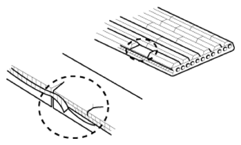

Repair Procedures: Inspection
WARNING: This page is about a different variant/trim than selected.
Visually check the belt for excessive wear, frayed cords etc. If any defect has been found, replace the drive belt.
NOTE:
- Cracks on the rib side of a belt are considered acceptable. If the belt has chunks missing from the ribs, it should be replaced.
 Courtesy of HYUNDAI MOTOR AMERICA
|